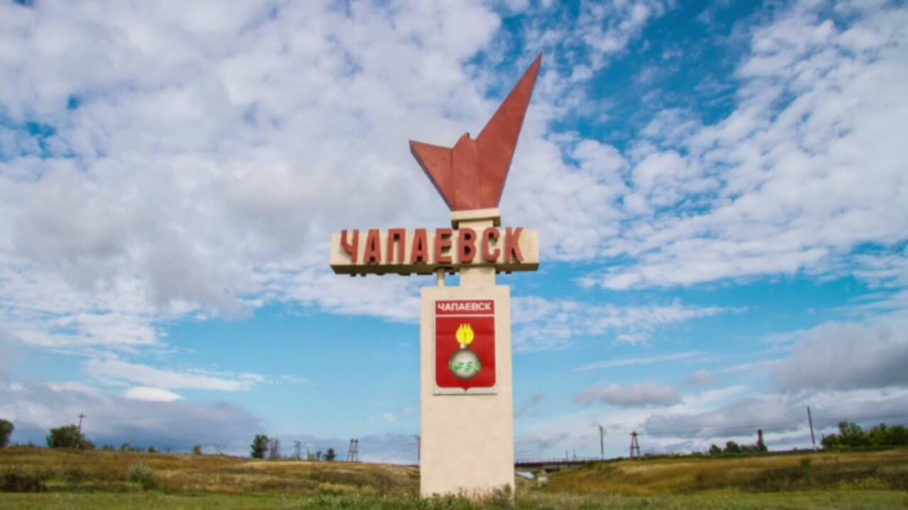
О городе
История города Чапаевск началась в 1909 году со строительства Самарского Сергиевского порохового завода. Покровителем завода был Великий Князь Сергей Михайлович Романов, внук императора Николая I, поэтому завод получил имя Сергиевского.
Про город Чапаевск говорят – «трижды названный»: с 1911 года — посёлок Иващенково, с 23 августа 1927 года — город Троцк, с 7 февраля 1929 года в год 10-й годовщины гибели В.И.Чапаева было переименование города в Чапаевск.
Интересные места
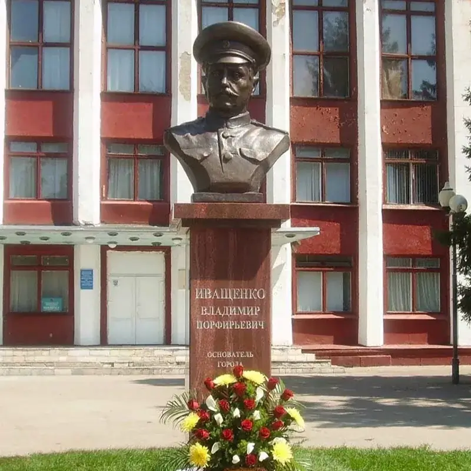
Бюст основателя города В. П. Иващенко
Бюст основателя города В. П. Иващенко был открыт в июле 2011 года в честь 100-летнего юбилея города.
Подробнее →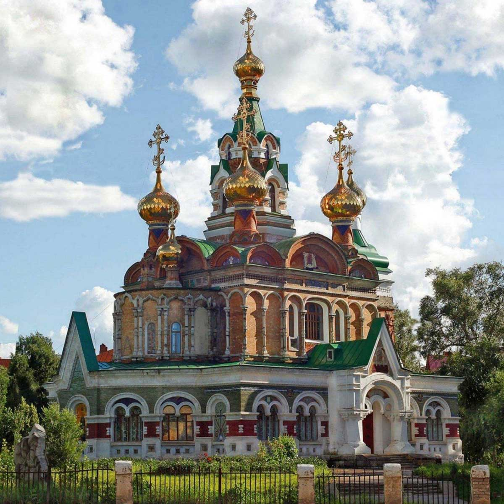
Церковь преподобного Сергия Радонежского
Храм Сергия Радонежского – визитная карточка Чапаевска, памятник архитектуры федерального значения.
Подробнее →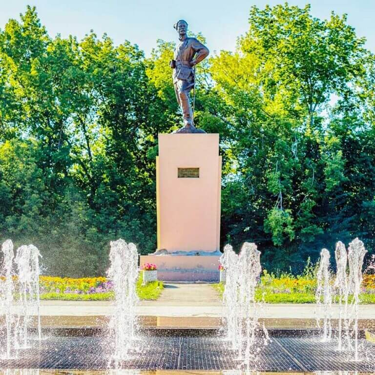
Памятник Василию Ивановичу Чапаеву
Памятник В. И. Чапаеву установлен на территории городского парка культуры и отдыха имени Чапаева.
Подробнее →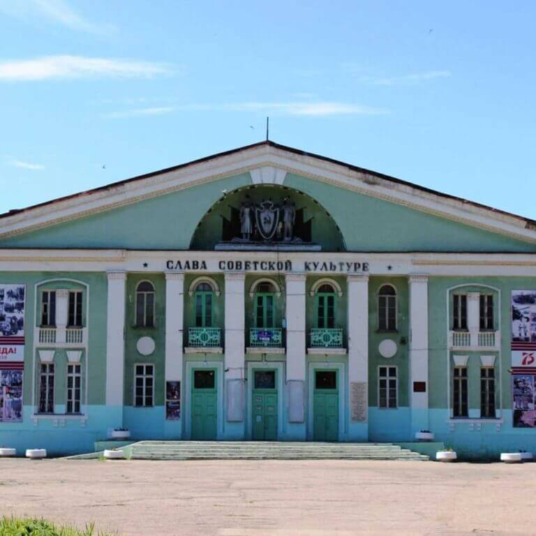
Муниципальный краеведческий музей
Краеведческий музей основан в 1968 году. Фонды музея насчитывают свыше четырёх тысяч единиц хранения.
Подробнее →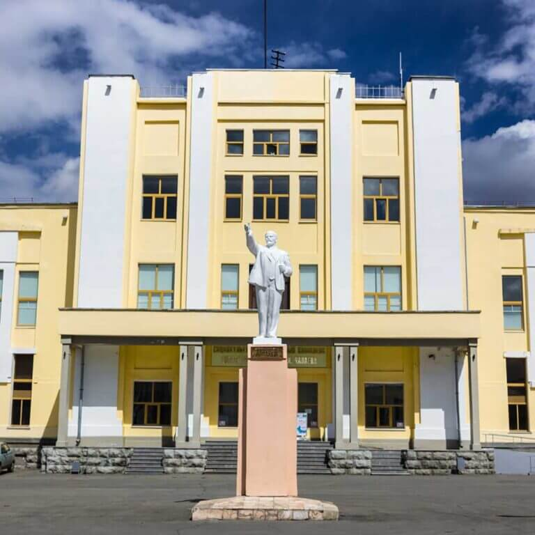
Дворец культуры имени В.И. Чапаева
Дворец культуры в стиле конструктивизм построен в 1929 году.
Подробнее →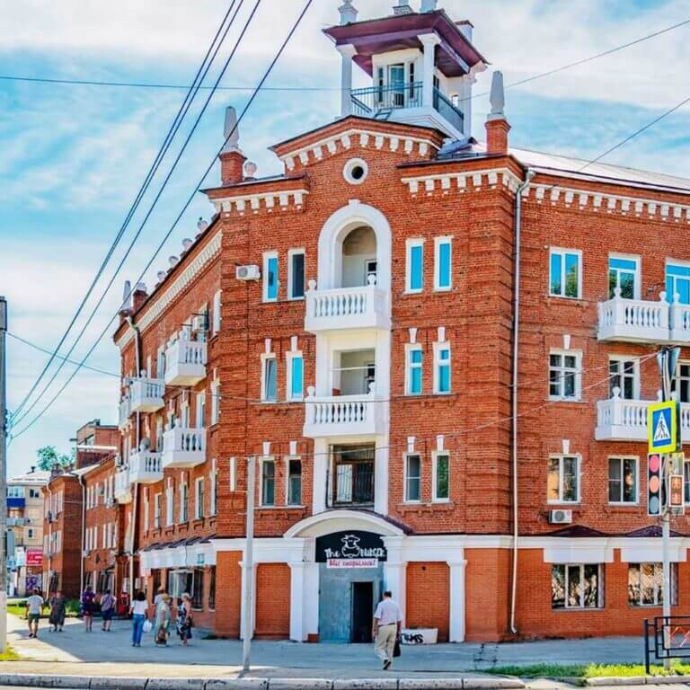
«Дом жилой» (улица Пионерская, 11)
Дом специалистов, построенный в 1938 году. Считается одним из интереснейших в городе.
Подробнее →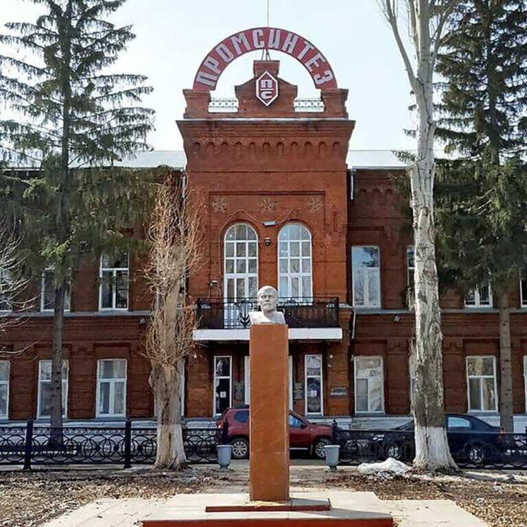
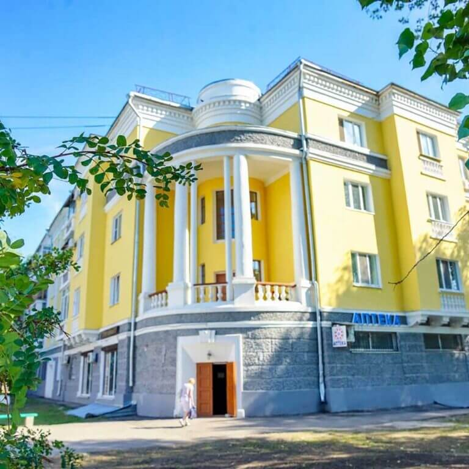
«Дом жилой с мезонином» (улица Ленина, 30)
Два отдельно стоящих трёхэтажных дома, построенных в 1929 году.
Подробнее →Места отдыха
Актуальная информация о местах отдыха и досуга в Чапаевске. Подробное описание, часы работы, услуги и контакты.
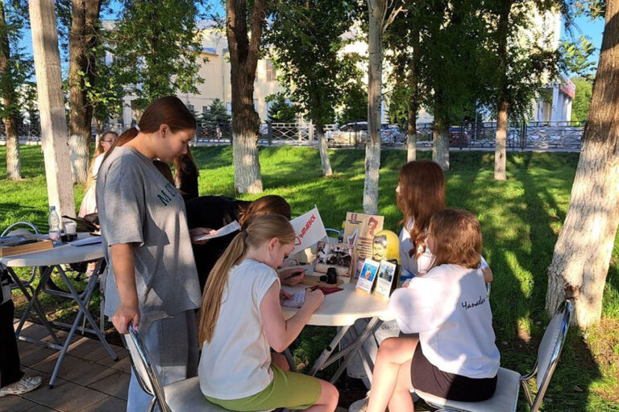
Парк имени В.И. Чапаева
Обновленный парк имени В.И. Чапаева – это не просто зеленая зона, а настоящая «Территория Успеха», где переплетаются история и современность. Монументальный памятник Чапаеву, словно страж времени, возвышается над парком.
Подробнее →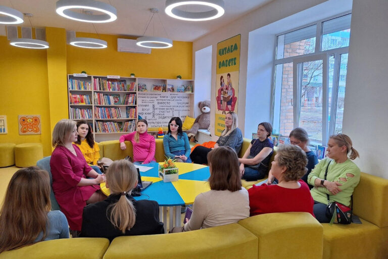
Модельная библиотека «Библиоград»
Современная модельная библиотека «Библиоград» – это уже не просто книгохранилище, а настоящая творческая лаборатория, место для встреч, общения и интересных дискуссий. «Библиоград» – место, которое давно переросло рамки обычной библиотеки.
Подробнее →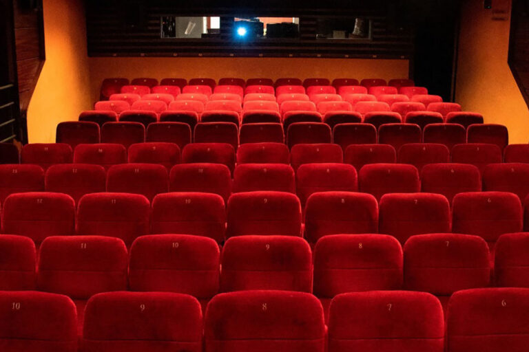
Современный кинозал в ДК им. А.М. Горького
В декабре 2017 года в рамках федеральной программы поддержки отечественного кинематографа в Чапаевске открылся современный кинозал во Дворце культуры им. А.М. Горького. Кинозал, рассчитанный на 276 зрителей, оснащен передовым кино-технологическим оборудованием.
Подробнее →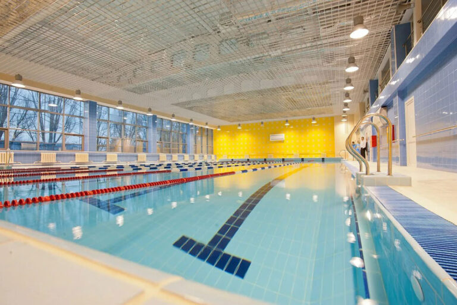
Спортивный комплекс «Луч»
Спортивный комплекс «Луч» приглашает в бассейн! Развитие спортивной инфраструктуры – приоритетная задача для города Чапаевска. Вместе с ледовой ареной «Старт», футбольным полем на стадионе «Луч» и универсальными спортивными площадками, жителям города доступны разные виды активности.
Подробнее →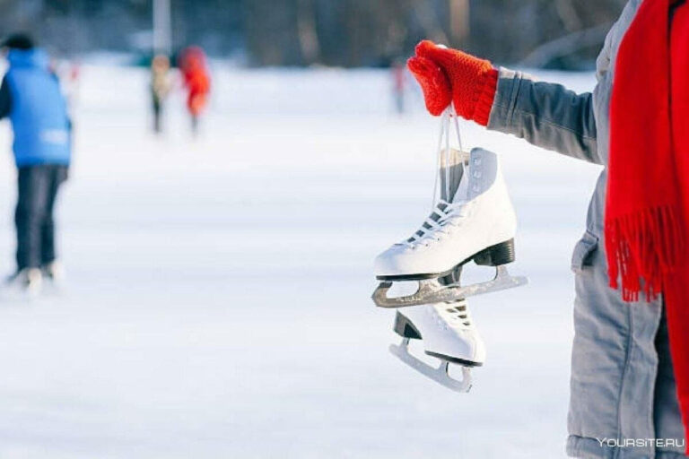
Ледовая арена «Старт»
Спортивный комплекс «Старт» — центр спортивной жизни Чапаевска. Арена открыта ежедневно с 9:00 до 21:00 по адресу: г. Чапаевск, ул. Железнодорожная, 14 А. Спорткомплекс «Старт» уже несколько лет является излюбленным местом для активного отдыха горожан.
Подробнее →Люди
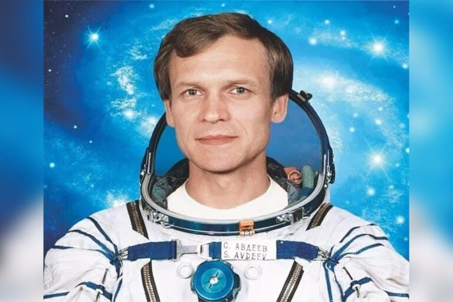
Сергей Васильевич Авдеев: чапаевский покоритель космоса
Сергей Васильевич Авдеев родился в Чапаевске. Космонавт, Герой России, его имя вписано в Книгу рекордов Гиннеса. Провел в космосе 747 суток, участвуя в трех экспедициях на станцию «Мир», совершил десять выходов в открытый космос.
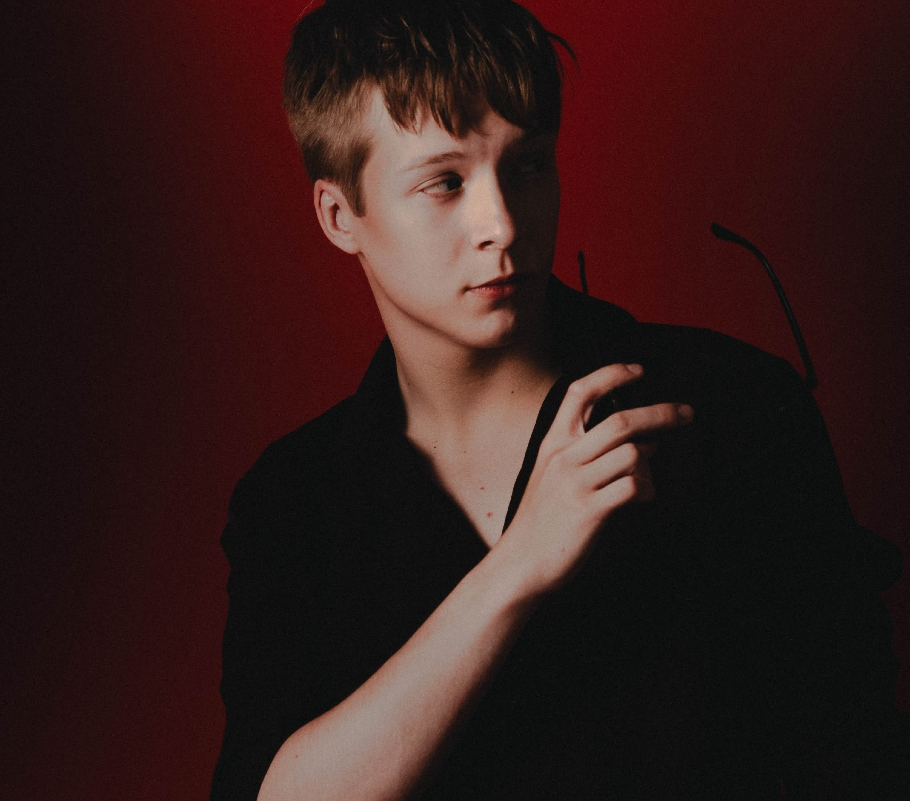
Данил Андреевич Шаварин: выдающийся актер, снимается в кино
Данил Андреевич Шаварин – актер,родом из Чапаевска. Обучался в РГИСИ на курсе "Артиста Мюзикла".Снимался во многих работах известных режисеров. В их числе Тарантино, Тарковский, Кристофер Нолан. Лучший друг Тимоти Шаламе.
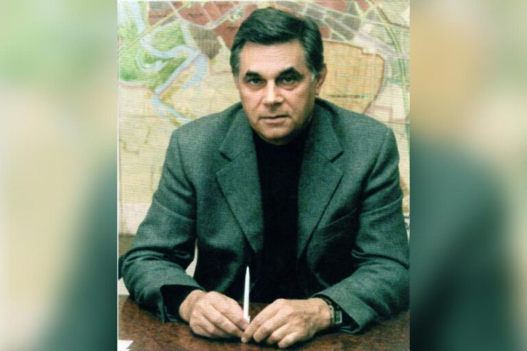
Владимир Иванович Жуков: архитектор, формирующий облик Самарской области
Владимир Иванович Жуков, уроженец Чапаевска, – заслуженный архитектор России, оставивший значительный след в архитектуре Самарской области. После окончания Куйбышевского инженерно-строительного института работал в «Куйбышевгорпроекте», затем главным архитектором Тольятти и Самары.
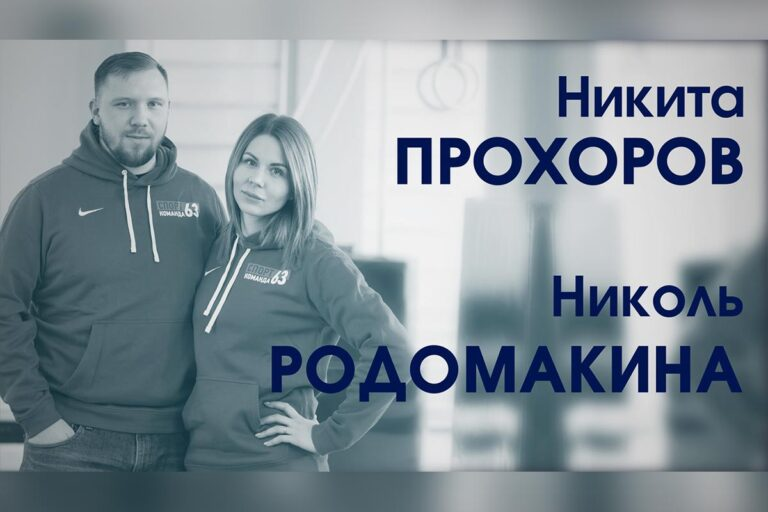
Никита Прохоров и Николь Родомакина
Чапаевский паралимпиец Никита Прохоров завоевал серебряную медаль в толкании ядра на Играх в Токио (2021), установив рекорд Европы (16,29 м). Чемпион Паралимпиады-2012 в Лондоне, многократный чемпион мира и Европы. Заслуженный мастер спорта.
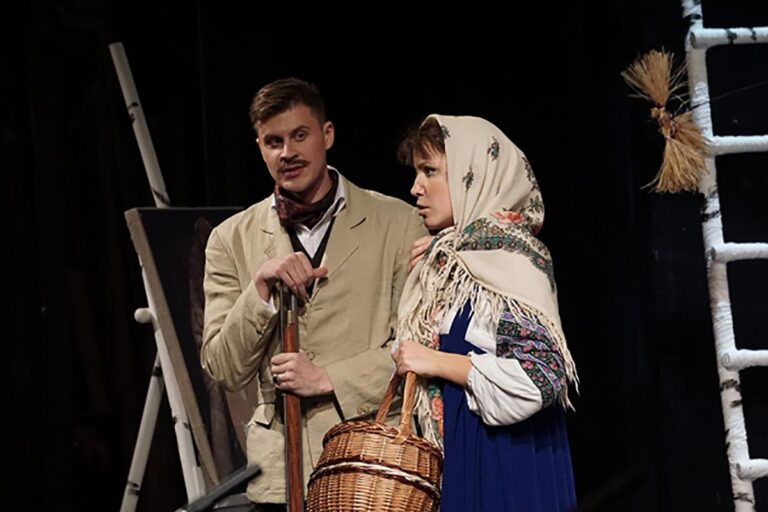
Владимир Николаевич Морякин: чапаевский актер
Владимир Николаевич Морякин — чапаевский актер на сцене Самарского академического театра драмы им. М. Горького. Родился в городе Чапаевске, учился в школе №1. Выпускник второго набора мастерской В.А. Гвоздкова.
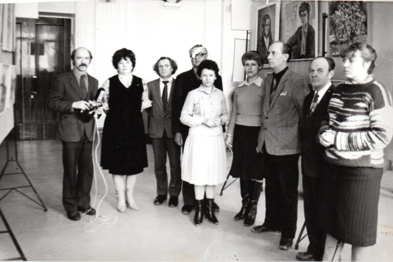
Михаил Максимович Гераськин: художник, воспевающий красоту Самарской земли
Михаил Максимович Гераськин – самарский художник, живописец и пейзажист. С 12 лет посвятил себя искусству, окончил Пензенское художественное училище. Известен своими лиричными пейзажами Самарской области.
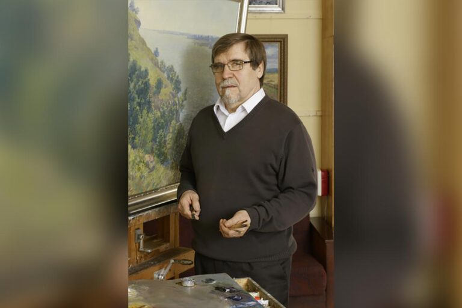
Сергей Никитович Кондулуков: художник из Самарской области
Сергей Никитович Кондулуков – заслуженный художник РФ, родом из Чапаевска, ныне живет и работает в Тольятти. Член Российской академии художеств и Союза художников. Автор известных картин, таких как «Студентки. Душевный разговор».
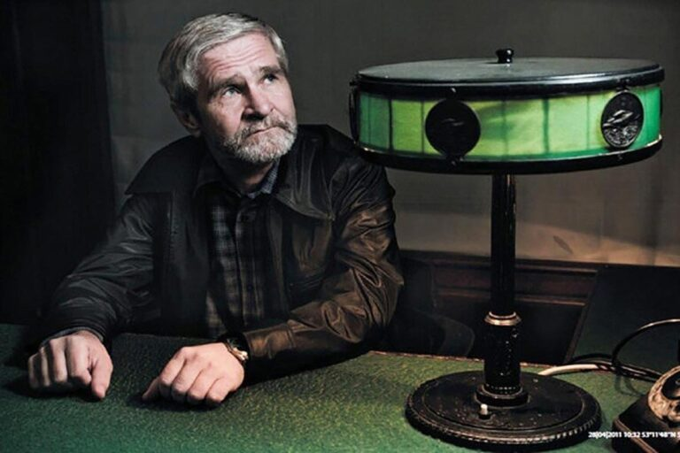
Чапаевский поэт Евгений Чепурных: путь к признанию
Евгений Петрович Чепурных – чапаевский поэт, лауреат премии им. И.Дмитриева. Дебютировал в 1978 году в журнале «Юность», получив признание известных литераторов. Окончил Литературный институт им. М. Горького.
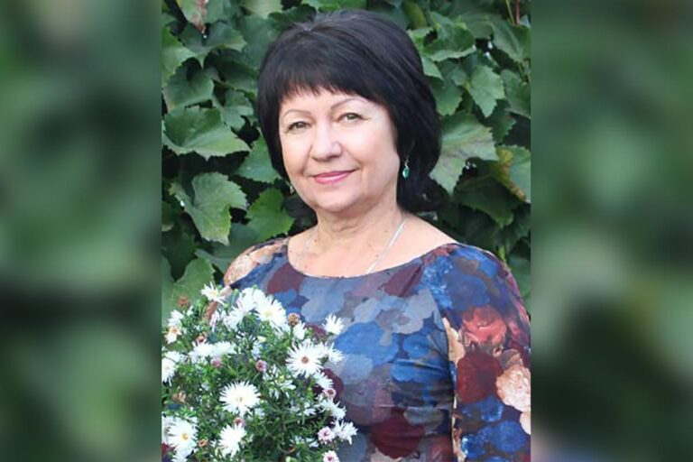
Татьяна Веньяминовна Кижайкина: хранительница литературных традиций Чапаевска
Татьяна Веньяминовна Кижайкина – чапаевская поэтесса, активный деятель культуры и член Союза писателей России. Автор восьми поэтических сборников, наполненных любовью к родному краю и глубоким лиризмом. Более 10 лет руководила литклубом.
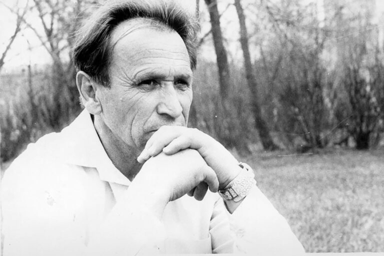
Владимир Никифорович Бондаренко: сказочник из Чапаевска
Владимир Никифорович Бондаренко (1932-2001) – известный детский писатель, сказочник, прозаик и поэт, большую часть жизни проживший в Чапаевске. Вместе со старшим братом Вениамином создал 16 книг сказок, многие из которых экранизированы.